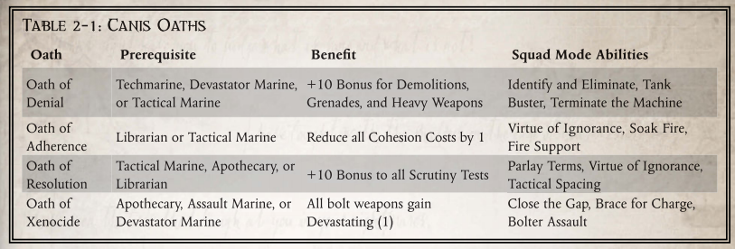

卡尼斯突出部特殊能力
"向大炮冲锋！移动！移动！前进！前进！"
-守望队长西庇阿
在卡尼斯突出部，死亡守望星际战士必须开发出各种技术，以对抗钛部队的技术能力及其盟友的野蛮行径。除了异形带来的直接物理威胁外，战斗兄弟还必须与 Tau 帝国的魅力和宗教异端作斗争。有时，Tau 帝国试图公开发表言论的行为可能比他们从肉体上战胜远征军的努力构成更大的威胁。
有几次，被认为已经清除了 Tau 的世界后来被证明仍然受到他们的影响，因为隐藏的资源出现了。这些情况导致了帝国补给队的中断和许多忠于帝国的士兵丧生。这种致命的作战能力与背信弃义的异端邪说相结合，其危险程度丝毫不亚于阿克戎斯突出部的混沌部队所构成的威胁。如果再加上钛星人经常摆出的礼节和友谊的假象，任何没有做好准备面对它的人都会精神崩溃。
卡尼斯行为
在卡尼斯狭长地带的战斗中，口水战和实战之间的斗争持续不断。钛星人及其盟友所灌输的腐化是一种阴险的力量。受其影响的人类往往无法挽救。死亡守望必须面对一个持续不断的挑战，那就是识别那些受到污染的人类，并确定他们是可以被拯救，还是必须与他们的异种战友一起被消灭。最大的危险在于，钛星人的堕落很难被发现，也几乎不可能被清除。对于某些人类来说，一旦被污染，无论如何忏悔都无法净化灵魂中的异种污点。
与这些异种势力的战争会改变一些与之对抗的战友的人生观。本节为那些在卡尼斯突出部全面体验远征的战斗兄弟提供了一系列新的个人特质。玩家在考虑这些 "风采 "时，应记住这些转变应该是渐进的。星际战士的生命周期较长，他们的思想往往难以适应环境的变化。个人特质的任何变化都应该是由一系列事件引起的，而不是一次突如其来的戏剧性冲突。不过，由于这些都是个性特征，因此肯定会有个别星际战士的变化更为频繁。举止的转变不需要 Xp 费用。有关个人特质的更多信息，请参阅 Deathwatch 第 32 页。
灵活
随着远征军继续在卡尼斯要塞作战，他们会不断接触到新的 Tau 战术和更多的 Tau 盟友。不同的指挥官在推进战斗时会采用不同的策略。不同的辅助种族拥有不同的能力和战斗风格。其中一些辅助种族甚至可能拥有以前未曾发现或根本无法识别的资源。所有这些变化都要求星际战士精通《法典》的不同方面，以便能够识别和利用最合适的应对措施来应对每一种新的威胁。对于一些 "战斗兄弟 "来说，这种挑战是一个巨大的机遇。每次战斗都会给他们带来惊喜，这让这些星际战士兴奋不已。他们将每一个新敌人都视为学习和检验自己战术敏锐性的机会，因为他们能迅速调整自己的方法。他们热衷于这种想法。在准备执行任务时，信奉这种理念的星际战士很少只根据手头的任务来选择武器装备。相反，他们会选择既能解决当前冲突，又有最广泛用途的材料。他们认为，有备无患是成功的核心。这样，他们才能更好地适应和克服帝国面临的任何意外威胁。对他们来说，光有合适的工具是远远不够的。相反，他们必须为任何可能面临的任务配备合适的工具。
烦躁
很多时候，Tau 军队都试图用冗长的谈判策略让远征军陷入困境。当然，随着谈判时间的推移，钛星人有足够的时间制造新装备、加固前哨基地并为他们的部队提供额外的支持。此外，任何与 Tau 人的接触——即使是在谈判桌上——都会带来污染的风险。与此同时，帝国军队甚至有可能被从冲突中召回，从而被派往更加动荡的前线。这样一来，延迟给钛星人带来了巨大的好处，但却很少对帝国有利。对许多星际战士，尤其是死亡守望来说，这种对异种请求的容忍已经持续太久了。谈判人员喋喋不休，令他们大失所望。战斗兄弟们要求立即有力地解决手头的问题。这些死亡守望成员没有等待远征军盟友的许可，而是选择直接把事情交给自己处理。当他们接到任务时，他们会直接、有力、毫不拖延地执行任务。与异种人没有商量的余地，因为他们唯一应得的仁慈就是迅速死去。否则只会损害帝国的利益。阿奇鲁斯远征军无法在现阶段做出任何让步。
操纵
Tau 帝国不断试图用他们的哲学信仰污染帝国军队。他们乐于提供各种形式的援助，尽管任何援助都带有异种的污点，并时刻面临异端的风险。正是由于异端邪说，卡尼斯突出部的各个世界最初落入了钛帝国之手。一些人认为，要想为帝国收复这些人类世界，除了运用军事力量之外，还必须有更多的手段。当然，教会的军队已经准备好并能够宣扬神帝的神圣话语，但最虔诚的信徒却很少愿意或能够与这些异形进行任何形式的对话。
只有极少数死亡守望杀戮小队的成员掌握了诀窍，能够充分压制自己的愤怒，从而与异种进行交流。通过无休止的冥想和净化仪式，他们的思想和灵魂已经摆脱了异端邪说的玷污。有了这些准备，他们愿意与 Tau 族的使节进行社交对话，并承认有时讨论可能会为帝国军队提供更多的时间来调配资源。这些 "战斗兄弟 "认为，要消除异种威胁并最终清除人类的污点，就必须在一定程度上达成谅解。他们相信，只有通过社交和精神手段有效地操纵敌人，才能最终在战场上战胜他们。
忍受
在卡尼斯突出部有许多活跃的战场，但也有一些地方的战火已经熄灭。在这些地方，有形的冲突等待着仅限于会议室的口头交流。因此，军事单位不得不时刻保持备战状态。这些谈判随时可能破裂。在这种情况下，部队会匆忙部署，以便在对方毫无准备的情况下发动攻击。保持数小时的警戒状态可能具有挑战性。数月甚至数年保持同样的状态也会让人精疲力竭。
面对这种无处宣泄的持续压力，部队会有各种各样的反应。一些星际战士选择将等待作为培养更强自律能力的机会。这些 "战斗兄弟 "将时间集中在训练、学习和高度警惕上。他们意识到攻击随时可能到来，但他们认为此时此刻他们的职责就是简单的等待。这种守株待兔的能力在更激烈的冲突中也能带来好处。了解出击的时机，并耐心等待时机的到来，可以挽救宝贵的生命和资源。贸然出击可能会满足内心对暴力的渴望，但这很少是战胜对手的最佳策略。
好学
与与 Tau 势力结盟的世界打交道，会让 Achilus 远征军暴露在各种不同类型的异种面前。虽然他们散布的影响无疑会危害到他们的灵魂，但这些不同生命形式的存在及其不同的技术也带来了一系列新的挑战。在疯狂的激烈战场上，即使是星际战士也无法立即识别每一种发射的武器，也无法识别每一种防御的弱点。当第一次接触这些技术时，这一点就变得更加重要。
一些星际战士认为，要想有效地消灭敌人，就必须了解敌人。这些 "战斗兄弟 "会仔细观察被打败的对手，并对他们的生物和技术做非常详细的记录。每遇到一个对手，他们都会努力扩大自己的知识面，以便与战友和审判庭的特工分享。在冲突间隙，他们可能会选择更仔细地研究自己的笔记，因为他们会深入研究战利品或通过战斗获得的样本的解剖和结构。在许多情况下，这可以补充药剂师或科技陆战队员的专长，但这种方法并不一定仅限于走这些道路的星际战士。
怀疑
当被迫与异种人交往时，文化和心理差异可能是难以克服的。对异种人来说，完全符合正常人类行为准则的行为可能会构成令人发指的罪行，甚至是背叛。同样，异星人可能对帝国的标准不屑一顾。它的行为很容易违反受人尊敬的行为准则。由于真正学习这种邪恶敌人的行为方式有异端之嫌，只有那些甘愿牺牲自己灵魂的人才会采取必要的措施来发现这些困难，为这些困难做好准备，并妥善解决它们。
战斗兄弟没有接受这样的风险，而是选择了更直接的道路。在与异形或可能被异形污染的人类打交道时，他总是希望对方背叛自己。信奉这一信条的战斗兄弟总是为不可避免的情况做好准备。他们意识到，异种随时都可能制造出一个看似无害的装置，但最终却会变成一颗威力无穷的炸弹。或者，这些亵渎神明的生物可能拥有难以想象的超能力，或者拥有能够隐藏埋伏的未知技术。这些星际战士通常会选择用直接的军事行动来解决问题，因为这样总能避免在不利条件下发生冲突的风险。
卡尼斯单人模式
在卡尼斯突出部的战斗中，战斗兄弟需要应对各种不同寻常的对手。钛帝国的辅助部队拥有大量可利用的资源和一系列技术创新。为了应对这种情况，星际战士必须根据对手的情况调整自己的战斗方式。由于这种多样性，杀戮小队中的个别成员面对装备和战斗技巧大相径庭的对手的情况并不少见。在这种情况下，当不同的小队成员面对截然不同的对手时，使用单人模式就显得尤为合适。
为了应对这种多样性，活跃在卡尼斯突出部的死亡守望星际战士开创了几种独特的单人模式。这些模式特别适合在该地区作战的人员，但在其他地方也可能有用。为了掌握这些技巧，星际战士必须首先与熟练使用这些技巧的人一起工作。这些人主要集中在阿基里斯远征的突出部。
空中战士 Aerial Warrior
成本：250 Xp
类型：被动
所需等级：2
效果： 钛部队拥有数量不寻常的完全具备飞行能力的部队。其中最常见的是 Vespid Stingwings，但它们的无人机甚至是重甲战斗服都能在空中向帝国目标开火。这对缺乏飞行能力或缺乏必要的适应性和训练以在高空作战的帝国部队来说是个大问题。即使是配备了跳跃背包的星际战士也无法在空中停留足够长的时间，从而无法在飞行中有效地与某些对手交战。虽然远程武器仍然是一种有效的选择，但许多对手在近战攻击面前要脆弱得多。
为了克服这一困难，一些星际战士选择广泛练习使用跳跃背包，以应对此类战斗情况。面对飞行器时，这些 "战斗兄弟 "会启动他们的跳跃背包，利用背包接近目标，以便直接与之交战。这算得上是一次冲锋行动，会导致一次+20奖励的抓取行动。一旦成功，星际战士将慎用他的跳跃背包，部分利用对手的自然升力来减缓他们的坠落速度。只要战斗兄弟保持对抓取动作的控制，而敌人还活着，双方都会保持在高空。
改进： 在等级 4 时，星际战士已经非常熟练地掌握了这一技巧，在最初的抓取建立后，对手在试图挣脱抓取时会受到-20 的惩罚。在等级 6 时，这种惩罚会增加到 -40。
近身攻击 Close Quickly
成本：250 Xp
类型：主动
所需等级：2
效果：Tau部队拥有异常致命的远程攻击，但他们的近战能力往往远逊于帝国部队。因此，标准的帝国战术规定星际战士应避免长时间的远程战斗。虽然这在战术上是正确的，但往往会导致帝国部队在冲向武装敌人时，几乎没有机会躲避敌人的火力。
少数活跃在卡尼斯要塞的星际战士已经练就了在全力冲刺后实施攻击的能力。他们的日常训练以短跑为主，在不穿盔甲的情况下进行无数次冲刺，同时双手各持一把运行的链锯剑。在一些设施中，练习场地已经扩大，特别是为了让装备精良的机仆进行近战练习时，可以包括延长冲锋时间。其中一些机仆甚至配备了远程武器，这样战斗兄弟就可以在执行冲锋时练习躲避来袭的火力。
练习这种模式的陆战队员可以增加执行冲锋行动前的移动距离。他们可以移动到自己的奔跑距离，并在冲锋时仍能获得武器技能加成。但是，由于在移动中花费了额外的时间，移动会消耗他们的反应动作，直到下一个回合。
改进： 等级 4 或更高时，星际战士已非常熟练地使用此移动方式，任何冲锋行动的武器技能加成都会增加到 +20。等级 6 或更高时，执行冲锋时不会失去反应。
否认异端 Deny The Heresy
成本：250 Xp
类型：被动
所需等级：2
效果： 任何在卡尼斯要塞活动的帝国军队都不得不与信奉 Tau 教条的人打交道。在许多情况下，这可能意味着要与他们在不可能发生肢体冲突的环境中进行互动。然而，即使是与这些信徒进行讨论，也会有被污染的风险。在这种情况下，帝国特工可能会在这种亵渎神明的异端邪说的影响下迷失方向，看不到皇帝的荣耀。
一些星际战士采用了教会技术来净化自己的思想和灵魂，以便更有效地抵御这些影响。他们通过仔细集中注意力，封闭自己的思想，使腐败没有机会生根发芽，即使他们在其中停留数小时或数天也是如此。事实证明，这种技巧对于被迫深入敌后的死亡守望杀戮小队或必须审问囚犯的战斗兄弟格外重要。
一旦星际战士学会了 "拒绝异端"，他将在抵御任何交互技能测试时获得 +20 加成。
提升： 学会此技能的星际战士达到等级 4 时，奖励将增加到 +30。在等级 6 时，"战斗兄弟 "已经掌握了这一能力，可以克服他人的抵抗，在任何 "威吓 "技能测试中获得 +20 加分。
仇恨传承 Legacy Of Hate
成本：100 Xp
类型：主动 主动
所需等级：3
效果 经过千年的分离，杰里科大陆上的许多人类文化都忘记了他们与人类帝国的联系。在失去政府的同时，他们也失去了对帝国崇拜的理解。当塔乌帝国与这些系统建立联系时，人类很容易被颠覆。没有了教会的指导，没有了对神帝信仰的抵抗，这些灵魂不知道异种传染的危险。很快，他们的文化就被异种信仰所淹没，他们的灵魂也被永恒的黑暗所诅咒。
随着阿基鲁斯远征军的到来，这一切都改变了。随着帝国军队与各个世界建立联系，这些星系的居民获得了救赎的新机会。然而，在他们接受救赎之前，必须先净化他们身上的异种污点。异种洗脑的力量非常强大，因此这种污点并不容易清除。
一些死亡守望成员潜心研究了宗教裁判所和教会的相关文献，这些文献详细介绍了经认可的净化对象的方法。通过研究，他们发现了异种影响的共同关键因素，并将这些系统调整为自己所用。因此，每当他们与受到异种影响的生物打交道时，他们都会在所有交互技能测试中获得 +30 的加分。这样，他们就能更好地从这些堕落的人类那里获取信息，有时甚至还能招募他们加入帝国的事业。
提升： 等级 5 时，该加成将增至 +40。
原体护卫 Primarch’s Guard
成本：200 Xp
类型：被动
所需等级：2
效果：由于卡尼斯突出部的钛部队使用了一系列远程武器，星际战士一直依赖于其动力装甲的效率。持续不断的毁灭性火雨导致许多战场只有最有限的掩体。在许多情况下，星际战士只能凭借信念和动力装甲进行防御，在密集的火力面前向敌人挺进。在卡尼斯要塞的许多星际战士都发现，信仰足以提供保护。事实上，当他们的行动最忠实于其战团的教义时，他们很少受到伤害。虽然还不清楚这是他们信仰的直接结果还是简单的统计异常，但证据确凿。在特定条件下，动力装甲比评审更具保护性，而不同的星际战士战团在这些条件下的表现似乎各不相同。
学习了这一技巧的战斗兄弟在执行与他们的 "战团会风范 "一致的行动时，任何防护装备的所有位置都会获得+2点护甲值的加成。该奖励适用于进行此类行动的任何回合。一旦他们不再体现其分会的精髓，该效果就会消失。
提升： 等级 5 时，该奖励增至 +3 装甲点数。等级 8 时，增加到 +4。
击退异种 Rend The Xenos
成本：100 Xp
类型：主动
所需等级：1
效果:Tau 种族的部队无一例外都装备了先进的技术，尤其适合远程作战。与此形成鲜明对比的是，他们的许多辅助部队，尤其是克鲁特人，使用的装备要原始得多，通常更适合近战。在许多情况下，这些不同的部队可能会在同一场战斗中使用，这样，Tau就能有效地与对手进行远程和近战交战。利用这些辅助兵种，金刚狼部队就有机会脱离近战，继续进行远程攻击。这样，这些相对原始的部队就能在更大规模的战斗中提供不成比例的优势。
在卡尼斯突出部，一些星际战士已经发现了这个问题，并采取措施加以解决。这些战斗兄弟仔细研究了这些辅助种族使用的原始装甲和装备。通过将对这些装备的基本了解与对异种生理机能的理解相结合，他们找出了身体上的关键弱点。在战斗中，他们会小心翼翼地利用这些弱点，充分利用他们的生理强化技术和帝国技术。在面对仅装备原始装甲的敌人时，他们的攻击完全无视装甲的 Ap。
改进： 等级 5 时，拥有此能力的战斗兄弟每次成功近战攻击穿戴原始装甲的敌人时，都会造成 1d5 的额外伤害。等级 7 时，伤害会增加到 1d10。
狙击手训练 Sniper’s Training
成本：250 Xp
类型：主动
所需等级：3
效果 在任何战斗情况下，能够自由瞄准敌人而不必担心遭到还击的攻击者都会占据巨大优势。在与Tau帝国作战时，帝国军队很少享有这种优势。他们的异种技术包括射程极远的武器和各种旨在提供隐蔽优势的装备。随着死亡守望杀戮小队不断面对拥有这些天赋的对手，一些小队已经努力提高他们在最极端战斗距离上的精确度。这是在与钛星人部队的持续冲突中发现并利用任何技术优势的持续努力的一部分。通过大量的练习和对瞄准系统的微小改进，他们在更远距离内的杀伤力可能会大幅提高。对于选择专注于这一技术的战斗兄弟，在发射一发子弹时，可延长所有螺栓武器的射程。远程射程增加到射程的三倍，短程射程增加到射程，普通射程增加到所列射程的两倍。
改进： 等级 6 时，增加的射程类别适用于所有阿斯塔特武器。
卡尼斯小队模式
Tau 帝国拥有一支装备精良的军队，他们因信奉中心教条而团结一致。这些敌人擅长使用联合武器战术，并通过心理和身体操纵来征服对手。为了让阿基卢斯远征军有效地对抗这些能力，他们还必须学会使用心理学和不同类型部队之间的合作艺术。只有开发并应用这些类似的技术，他们才有希望持续有效地对抗异种。
死亡守望杀戮小队天生就非常适合对付和战胜像Tau这样的敌人。他们接受的审问者训练确保战斗兄弟知道敌人的弱点以及利用这些弱点的最佳方法。然而，即使是这些成熟的技术也可以通过不断的接触得到完善。随着星际战士在卡尼斯突出部不断与Tau部队交战，小队模式能力也得到了改进，可以专门应对最常见的Tau战术。在任务间隙，许多战斗兄弟会与他们的同伴一起传播这些替代方法。
有关如何将这些模式与 "誓言 "相结合的更多信息，请参阅下面的 "使用 Salient 小队模式 "侧栏。
使用突出部小队模式 本书中介绍的 "小队模式 "能力旨在使整个死亡守望小队在激活后受益。然而，小队并不一定能立即使用这些能力。学习其中一种新能力需要在阿基卢斯远征的相应要塞中获得任务经验，并消耗 Xp 以获得新能力。除了这些要求之外，与所有小队模式能力一样，这些特定能力必须在特定任务中可用。 这些小队模式可以通过在任务前宣读适用的 "特殊突出部誓言 "来获得。要宣读 "特殊突出部誓言"，只有现任小队长需要购买誓言。但是，只有单独购买了 "突出部特定小队模式 "的 "战斗兄弟 "才能在激活这些模式时获得优势。这一限制遵循与 "战团特定小队模式 "相同的规则，只有获得该模式的人才能从中获益。这样，对于 "战术专长"（《Deathwatch 规则手册》第 85 页）等能力而言，"特定区域小队模式 "也被视为 "战团小队模式"，在特殊情况下，未购买该能力的 "兄弟连 "也能获得该能力。 请注意，在这两种情况下，死亡守望杀戮小队都不需要在学习该能力的局部地区活动。一旦掌握了小队模式能力——必要时还有 "誓言"——就可以在任何适当的任务中自由使用。 |
攻击模式
这些技术专门用来对抗 Tau 的技术优势，并保护人类不受异种影响。
缩小差距 Close The Gap
成本：250 Xp
行动：完整行动
激活费用：2
持续： 否
效果 由于其武器技术，Tau 部队倾向于远程战斗。虽然星际战士在这种战斗中一般都能与塔乌人匹敌，但当帝国的部队能与塔乌人部队近距离接触并使用其卓越的近战技术时，他们就能获得巨大的优势。在这种情况下，太无法充分利用他们的远程武器，往往会屈服于阿基鲁斯远征军的优势能力。
活跃在卡尼斯要塞的死亡守望成员们努力开发新技术，以消除Tau的远程优势。其中一项技巧就是让小队成员协同作战，迅速向塔乌人移动，然后将异种击出阵地。除了增加近战机会外，这通常还能防止异形有效地攻击帝国的宝贵资源。
当星际战士激活此能力时，他和支援范围内的所有小队成员都可以使用 "全移动 "行动冲向对手，并立即执行 "诱敌 "行动。拥有 "冲刺 "天赋的角色也可以在 "全移动 "中使用此能力。
改进： 如果战兄的等级为 4 级或更高，所有角色的诱敌动作都会获得 +10 的加成。如果他的等级为 6 级或更高，所有角色的移动距离可额外增加 4 米。
识别并消除 Identify And Eliminate
成本：250 Xp
行动： 完整行动
激活费用：1
持续： 是
效果：Tau特别擅长设计能够有效融入环境的科技装置。其中最著名的就是他们的各种隐形战衣，这些战衣既可以用来侦察，也可以用来对敌人发动出其不意的攻击。这些隐形战衣的隐蔽效果远远超过任何同类的便携式帝国装备。通常情况下，只有当这些隐形战衣的系统开始干扰标准传感器系统的正常功能时，帝国部队才能识别出它们的存在。
一些死亡守望杀戮小队已经开发出了利用隐形战衣造成的传感器干扰的策略。虽然效果有限，但如果几名星际战士齐心协力找出干扰源，他们就能开始三角测量并缩小隐藏对手的位置。这大大减少了为找到隐形战衣而必须搜索的区域，但这绝不是成功消灭异种入侵者的可靠方法。
当一名星际战士激活此能力时，他可以立即进行一次 "感知 "测试，尝试找出任何隐藏敌人的位置，包括 Tau 隐形装；参见 Deathwatch 第 367 页。在支援范围内的每一名小队成员，他都会获得 +5 的加成。如果他成功了两个或两个以上的成功度，他就会确认敌人的存在，并将隐形领域的激活模式对所有小队成员造成的武器技能和弹道技能惩罚降低到-20。
改进： 如果战斗兄弟的等级为 5 级或以上，那么在 "感知测试 "中每成功一次，武器技能和弹道技能的惩罚就会减少 10。
终止机器 Terminate The Machine
成本：100 Xp
行动：半动作
激活成本：1
持续： 是
效果：在众多异端邪说中，钛星人还接受了合成智能这一亵渎神明的概念。在他们的文化中，甚至在战场上，水牛人雇佣了无数无人机作为仆人。这些装置没有任何生命成分。相反，它们是由纯粹的合成智能体控制的，旨在服从异种主人的一切命令。同样，他们的车辆和建筑也使用了智能系统，其中一些比动物般的无人机复杂得多。这些装置与帝国教派和机械专家的方式背道而驰。它们为 "阿基鲁斯远征 "提供了另一个理由，即清除卡尼斯突出部上这些可怕的污点。长期接触这些实体可能会滋生认同感。这种态度只会导致未来的诅咒。
一些星际战士在机械神殿的技术兵和贤者的指导下研究了 Tau 无人机的样本。他们的研究重点是这些设备最脆弱的部分，尤其是那些储存弹药和燃料的部件。当一名接受过这项技术训练的战斗兄弟启动这项能力时，他和所有在射程范围内的小队成员都会变得更加擅长瞄准这些部件。星际战士的所有武器都可对无人机群造成爆炸伤害。如果武器已经造成爆炸伤害，则在攻击中增加 +2 规模伤害。
改进： 如果战斗兄弟的等级达到 4 级或更高，所有武器对无人机的穿透值都会增加 2。
防御模式
钛星人特别喜欢通过额外的谈判来拖延战斗行动。在卡尼斯突出部，一些星际战士已经发现了一些非常适合与这些异种作战的技巧。
应对冲锋 Brace For Charge
代价：250 Xp
行动 反应
激活费用：1
持续： 无
效果：与钛星人部队合作的一些辅助单位特别注重近战： 与钛星人部队合作的一些辅助单位特别注重近战。这为钛星人主力部队所青睐的远程武器提供了有力的补充。这样，不同的异种就能有效互补，对帝国部队构成严重威胁。当防御者与这些联合部队交战时，如果他们选择与辅助部队近战，那么远程的 Tau 部队就能自由移动，并瞄准更脆弱的帝国资产。为了解决这个问题，一些死亡守望杀戮小队开发出了在最后一瞬间对来袭的大部队进行密集射击的方法。这往往能成功地阻挡或消灭冲锋攻击。因此，"战斗兄弟 "和任何支援的帝国部队都能避免近战并保持射速。
当星际战士激活此能力时，他和支援范围内的任何小队成员都可以立即执行火力压制行动。如果行动单位被该行动压制，则无法完成攻击行动。
改进： 如果战斗兄弟的等级为 4 或更高，所有行动角色都会在压制射击行动中获得 +20 全自动连发攻击加成。如果战斗兄弟的等级为 6 级或更高，压制射击每消除一点幅度，攻击目标的定身测试就会受到-5 的惩罚。
对赌条款 Parlay Terms
成本：300 Xp
行动：完整行动
激活费用：3
持续：是
效果：Tau 的哲学信仰在很多方面都反对不必要的冲突。虽然异种仍然是整个帝国的憎恶，但杰里科边疆区内激烈的冲突已经导致这些通常对立的势力达成停火，甚至暂时结盟。这导致一些战场出现了极大的不确定性，因为塔乌人和帝国军队在暴力冲突与和平谈判之间交替出现。
活跃在卡尼斯狭长地带的死亡守望成员发现了这一问题，并开发出了利用这一问题的技术。其中最主要的方法是与异种人建立虚假的信任感，从而降低他们的防御能力，使他们可以轻易被屠杀。对这些方法的理解取决于对 Tau 心理的基本掌握，这样才能完全操纵 Tau 心理。
当星际战士激活此能力时，他可以立即对对方部队的首领进行一次挑战性（+0）指挥测试。在支援范围内的每一名额外小队成员都会为测试增加 +5 的加成。如果成功，对方部队会立即停止攻击，并尝试与 "杀戮小队 "谈判。如果星际战士在测试成功后继续战斗，异种将被视为 "惊讶"。此能力在每次遭遇战中最多只能使用一次。
改进： 如果战斗兄弟的等级为 5 级或以上，额外小队成员的奖励将增加到 +10。如果战兄的等级为 7 级或以上，异种在抵抗互动测试时会受到-10 的惩罚。
无知美德 Virtue Of Ignorance
代价：250 Xp
行动： 反应行动
代价：1
持续： 是
特效： 塔奥人总是喜欢采取保全生命的策略： 钛星人总是倾向于采取保全生命的策略，其目的往往是将幸存者洗脑，使其与异种部队结盟。这种态度实际上构成了该种族战斗策略的重要组成部分。只要有可能，这些外星人就会采取一切必要的手段，说服他们的敌人进行和平谈判，以避免双方人员伤亡。他们掌握人类的心理，即使在星际战士中，这些异形也能偶尔得手。
要战胜这种背叛行为，需要强大的心理承受力。通过小队互动，死亡守望杀戮小队成员可以相互提醒异种的背叛和他们事业的纯洁性。这样，他们就不那么容易受异形诱人谎言的影响了。
当一名星际战士激活此能力时，他和所有在支援范围内的小队成员在尝试抵御异种发动的交互技能时都会获得 +20 的加成。改进： 如果战斗兄弟的等级为 5 级或更高，他可以立即发表反驳意见，试图说服异种人他们的论点是错误的。这将算作一次 "恫吓 "测试，在 "支援 "范围内的每名队员都将获得 +5 的加成。等级 7 或更高时，在支援范围内，每名队员的抗性奖励会增加到 +10。
卡尼斯誓言
当星际战士与卡尼斯突出部的异种交战时，他们必须关注帝国文字的纯洁性，以及异种亵渎信仰所带来的诅咒。虽然 Tau 人的武器会危及身体，但他们对异形的理解可能会腐蚀思想和灵魂。这些誓言介绍了该地区的杀戮小队为克服这些独特的威胁而开发的各种战斗技巧。

否决誓言 Oath Of Denial
卡尼斯大陆上的 Tau 军队实力雄厚，装备精良。由于他们的部队在理应属于帝国的星球上保持着存在，因此他们继续掠夺这些星球上的自然财富。这样一来，他们就窃取了阿基卢斯远征军所需的物资，从帝国的每一位公民手中夺走了宝贵的资源。必须阻止这种不公正的行为，这样才能迫使异形将补给线延伸到杰里科大陆以外的地方。
费用：250 Xp
先决条件：科技陆战队员、毁灭陆战队员或战术陆战队员。
效果：选择宣誓此誓言的杀戮小队首先要在死亡守望科技陆战队员的指导下背诵神圣的引爆咒语。随后，他们会牢记预期作战区域内所有已知建筑和战车的结构、弱点和防御能力。最后，按照古老的仪式准备好爆炸物，并发放给每个兄弟战队成员，为任务做好准备。所有杀戮小队成员都会在爆破测试中获得 +10 加成，使用手榴弹时弹道技能也会获得 +10 加成。
小队模式能力： 识别并消灭、坦克克星、终结机器。
坚守誓言 Oath Of Adherence
Tau 军队在仪式信仰的驱使下传播他们的哲学，就像他们在银河系中传播他们的存在一样。只有献身于帝国并恪守其教义，帝国的人类公民才有希望抵御异种的影响。理解和忠诚为那些可能受到异端信仰影响的人提供了一条拯救之路。帝国需要死亡守望和宗教裁判所的协助来消除威胁，这样帝国才能继续安全地牧养帝国的羊群。
代价： 300 Xp
先决条件：智库或战术陆战队员。
效果 当战斗兄弟使用此誓言准备执行任务时，他们会集中精力净化自己，重新宣誓恪守并忠诚于帝国。随着每件盔甲的穿戴和每件武器的清洗，铭文和祝福也会随之更新。随着奉献精神的更新，小队的友情和对彼此的忠诚也焕然一新。在任何任务的持续时间内，小队都可以将所有凝聚值消耗降低 1 点，最低为 1 点。
小队模式能力： 无知美德、浸入火力、火力支援。
决心誓言 Oath Of Resolution
帝国致力于消灭所有异形，但并不总是有足够的资源来完成如此艰巨的任务。正因为如此，即使是那些对异形怀有最狂热仇恨的人，有时也必须承认在战术上有必要进行妥协。在情有可原的情况下，许多人甚至可以接受延长条约的必要性。由于阿基鲁斯远征军继续在奥菲斯和阿克洛斯高地面临激烈抵抗，这种例外情况越来越多地出现在 Tau 部队中。这些盟约的条件始终符合教会标准，但总会在参与者的思想和灵魂中留下一种传染的感觉。
费用：250 Xp
先决条件：战术陆战队员、药剂师或图书管理员。
效果： 当一支杀戮小队执行对抗Tau部队的任务时，宗教裁判所必须首先研究并分析争夺区域内的任何条约协议。作为准备工作的一部分，战斗兄弟必须审查相关条款，以便了解在不损害条约的情况下允许采取哪些行动。在杰里科高地的范围内，死亡守望必须将谈判权让给阿奇鲁斯远征军当局，因此他们很少有权力制定或更改这些条款。尽管如此，Tau 人还是经常有兴趣通过与这些星际战士谈判来完善他们的协议。当一支杀戮小队立下这个誓言时，他们将在所有 "察言观色 "测试中获得 +10 的加成。
小队模式能力： 对赌条款、无知之德、战术空间。
灭绝誓言 Oath Of Xenocide
在卡尼斯狭长地带，受 Tau 影响的各个世界与 Achilus 远征军部队保持着广泛的关系。在其中一些系统中，两个势力已经达到了一定的默契程度，可以容忍彼此的存在。而在另一些系统中，双方势力则全面开战。与死亡守望杀戮小队最相关的往往是后一种系统。虽然隶属于远征军的部队最适合与异种进行谈判，但没有其他部队能像战斗兄弟一样消灭外星威胁。
费用： 250 Xp
先决条件：药剂师、突击陆战队员或毁灭陆战队员。
效果： 宣誓此誓言的杀戮小队在开始准备时会彻底回顾异种的暴行。异种玷污所摧毁的系统、个人的野蛮行径以及人类被迫沦为奴隶的画面，都会通过催眠术根植于他们的记忆中。通常，以仇恨和愤怒为重点的情感内容也会同时植入。这种组合会释放每个战斗兄弟的愤怒，从而压倒其他所有情绪。有了这样的誓言，星际战士就准备好了歼灭他们的敌人，狂热的攻击会让他们的对手束手无策。当战斗兄弟们把愤怒集中到武器上时，每一发子弹都会变得更加致命。在任务持续时间内，他们的所有爆弹武器都会获得 "克敌（1）”武器属性。
小队模式能力： 缩小差距、应对冲锋、爆弹突击。